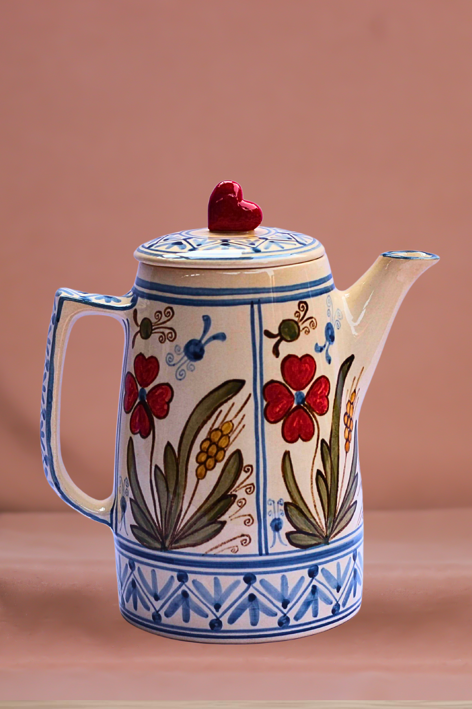
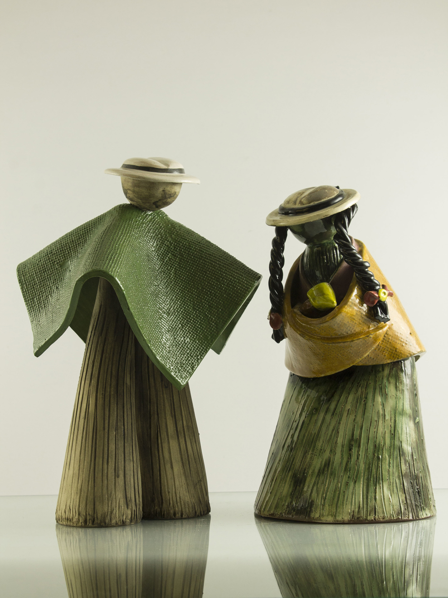
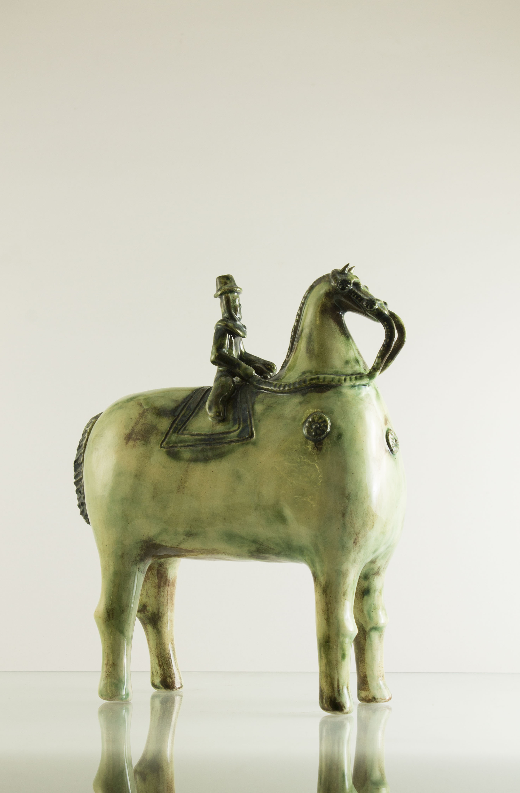

Arte Abdón
Tradición Familiar en Cada Pieza
Nuestro taller familiar se dedica a crear piezas únicas de cerámica esmaltada. Cada obra refleja la pasión por el arte ancestral y la dedicación de nuestras manos expertas, combinando técnicas tradicionales con diseños contemporáneos.
Catálogo de Productos
Descubre nuestras piezas únicas de cerámica esmaltada

Jarra floral
Hermoso jarrón de cerámica con esmalte brillante, perfecto para tus mates y decorar.

Pareja tradicional
Pareja tradicional de nuestra serranía, con acabado natural.

Jarrón Decorativo Ámbar
Elegante jarrón de cerámica con esmalte ámbar dorado, perfecto como pieza decorativa.
Tazas de Café Esmalte Verde
Par de tazas de cerámica con hermoso esmalte verde jade, perfectas para café o té.
Fuente Ovalada Azul Cobalto
Fuente de cerámica esmaltada en azul cobalto intenso, ideal para servir y decorar.
Cuencos Pequeños Multicolor
Set de 6 cuencos pequeños con esmaltes en colores variados, perfectos para aperitivos.
Plato Hondo Esmalte Craquelado
Plato hondo con técnica de esmalte craquelado único, una verdadera obra de arte.
Tetera Artesanal Marrón
Tetera de cerámica con esmalte marrón chocolate, perfecta para ceremonias de té.